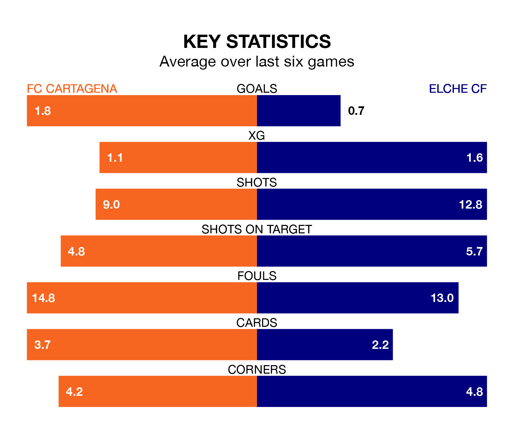

FC Cartagena are on an excellent run ahead of hosting Elche CF at the Estadio Municipal Cartagonova on Sunday, with 16 points collected from their last six games.
Cartagena have picked up five wins and one draw in their last six Segunda División games, and face an Elche side whose last six games have brought three wins and two draws.
Cartagena are 16th in the table after 27 games, of which they have won eight and drawn seven, earning 31 points.
Elche are eight places ahead of the hosts in eighth, with 11 wins and eight draws putting them on 41 points.
With 25 goals in 27 games so far this season, the away team are scoring at below the league average rate with 0.9 goals per game. But they are conceding fewer than average too, letting in 23 goals at a rate of 0.9 per game.
Cartagena are also below average scorers, with 1.0 goal per game, compared to a league average of 1.1. They have conceded 1.4 goals per game.
In the last three years, Cartagena and Elche have played each other on three occasions. Cartagena won all of them.
Their last meeting was on December 10, when Cartagena won 2-1 away.
Cartagena's last match was on February 16, a 2-1 win against Real Zaragoza, with Darío Poveda Romera and José Fontán getting the goals for Cartagena.
Elche drew 0-0 with SD Eibar last time out, on Sunday.
Updated: 12:18 (UTC), 19/02/24